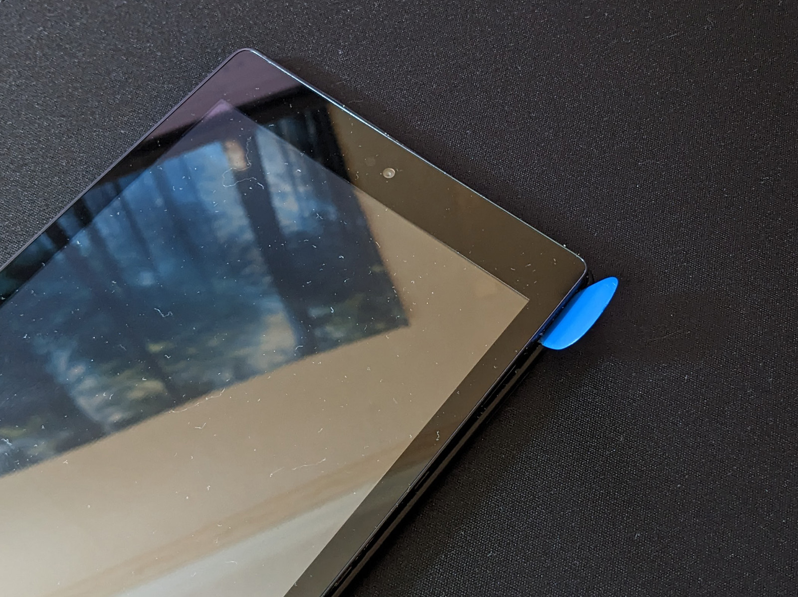
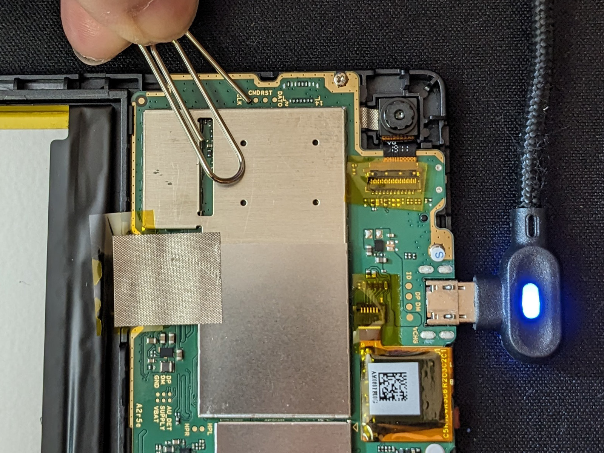
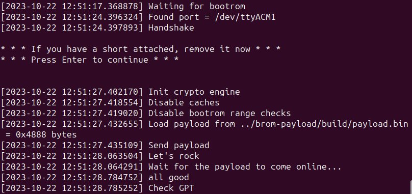
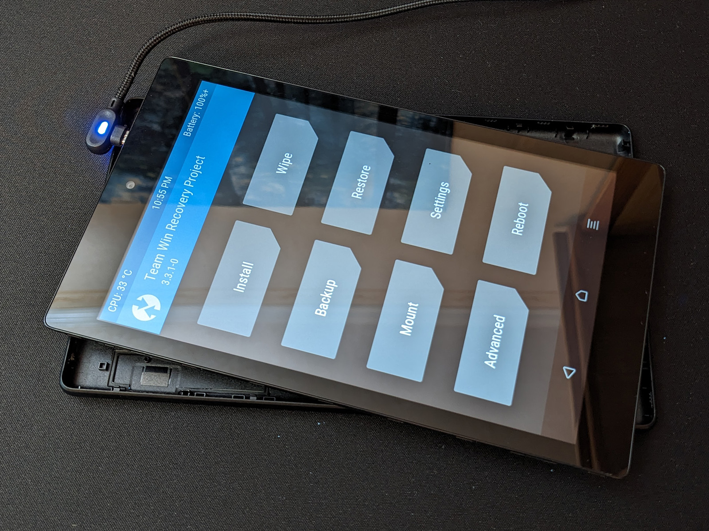

[놀이터] 구형 안드로이드 태블릿에 Home Assistant Core를 설치해서 가정용 IoT 서버로 활용하기... 실패!

코로나19 대유행이 지구를 강타하기 몇년 전 살기 좋았던(?) 시절, 초대형 e커머스 기업이자 IT 인프라 기업인 아마존에서는 자사 커머스 생태계 확장을 위해서 $79.99라는 저렴한 가격에 출시한 안드로이드 태블릿인 Amazon Fire HD 8의 리퍼비시 제품을 정가의 반의 반값에 가까운 미친 가격에 팔아치우기 시작했습니다. 저 역시 2018년에 출시된 8세대 Fire HD 8 태블릿을 배송대행으로 24.99 달러에 하나 구매를 했었습니다.
아마존의 Fire 시리즈 태블릿들은 일반적인 구글 안드로이드를 탑재하고 있지 않습니다. 대신에 구글 안드로이드의 오픈소스 배포판인 AOSP를 아마존이 자체적으로 변형(fork)시킨 Fire OS라는 운영체제를 탑재하고 있습니다. Fire OS에는 Google Play Store, Google Play Services, Google Services Framework 등 구글에서 독점 제공하는 안드로이드 시스템 요소들이 빠져 있고, 대신에 아마존 커머스 생태계와 연동된 자체적인 시스템 요소들이 탑재되어 있습니다. 구글 플레이 스토어가 탑재되어 있지는 않더라도 운영체제 자체는 안드로이드와 동일하기 때문에, 안드로이드 앱들은 APK 파일로써 수동으로 설치할 수는 있습니다. 다만 Google Play Services를 활용하는 대다수의 앱들을 실제로 사용하려면 호환성 문제로 작동이 잘 안되는 경우가 많습니다. 뿐만 아니라 아마존에서는 OTA 시스템 업데이트를 통해서 아마존 생태계를 피해 구글 생태계 앱을 사용하려는 각종 도구들과 우회 방법들을 지속적으로 차단해오고 있습니다. 기기의 부트로더가 잠겨져 있는 것은 당연하고요.
하지만 화이트해커들과 자유/오픈소스 개발자들을 막을 수는 없었죠. XDA Developers에서 xyzz라는 사용자가 MediaTek 칩의 보안 취약점을 역이용해서 부트로더 락을 우회할 수 있는 amonet exploit을 고안해냈습니다. 덕분에 2017년형 Fire HD 10과 2018년형 Fire HD 8에 TWRP 리커버리를 설치할 수 있게 되었고 AOSP 기반의 LineageOS 역시 포팅할 수 있게 되었습니다. 아쉽게도 지금은 사용자가 낮은 버전의 Fire OS로 다운그레이드하지 못하도록, 그리고 amonet exploit을 사용하지 못하도록 아마존에서 시스템 OTA 업데이트를 강제해둔 상태입니다. 저는 아마존에서 시스템 업데이트로 차단을 하기 전에 이 방법으로 부트로더 락을 우회할 수 있었고, 현재는 Fire HD 8에 안드로이드 13 기반의 LineageOS 20을 사용하고 있습니다.
하지만 Fire HD 8 태블릿은 2013년에 출시된 태블릿인 구글 넥서스 7 2세대와 맞먹는 처참한 성능과 2012년에 출시된 구글 넥서스 7 1세대 수준의 뒤떨어진 하드웨어를 가지고 있기 때문에, 2023년에 현역 태블릿으로 사용하기에는 어렵습니다. 10년 전에 출시된 기기 수준에서 최신형 안드로이드 13이 설치된다는 사실이 놀랍고, 가벼운 앱이나 일반적인 UI/UX는 나름대로 빠릿해서 LineageOS의 최적화에 놀라기는 했습니다만, 그럼에도 불구하고 웹브라우징같이 연산량이 많은 작업은 상당히 힘들어하는 기기입니다.
그래서 이걸 어떻게 활용할까 고민하고 찾아보다가, 구형 안드로이드 기기들을 가정용 IoT 서버로 재활용할 수 있다는 사용기를 접하게 되었습니다. 안드로이드 기기에서 리눅스 터미널 에뮬레이터 앱인 Termux를 설치하고, 그 위에서 오픈소스 사물인터넷 서버인 Home Assistant를 구동하는 방식입니다. 저는 2013년형 넥서스 7 태블릿에서 Home Assistant Core를 설치하는 방법을 알려주는 커뮤니티 가이드를 참조했습니다.
설치 과정은 대략 다음과 같습니다. 먼저 Termux의 기본 패키지 매니저인 pkg를 사용해서 패키지 저장소 정보를 최신화하고, 패키지들을 업데이트하고, 몇가지 패키지들을 설치해줍니다.
$ pkg updates
$ pkg upgrade
$ pkg install python nano openssh termux-api make libjpeg-turbo
그 다음 hass라는 이름으로 파이썬 가상환경을 만들어주고 활성화시킨 다음, 파이썬 패키지 매니저인 pip를 사용해서 homeassistant 패키지를 설치합니다.
$ python -m venv hass
$ source hass/bin/activate
$ pip install homeassistant
폭주하는 에러 기관차
pip install homeassistant를 실행시키기 전에, 인터넷을 찾아보니까 rust와 관련해서 각종 오류가 발생할 수 있으니 우선 몇가지 패키지들을 미리 설치하라고 하더라고요. 그래서 설치하려고 했습니다.
$ pip install rust
$ pip install cargo
$ pip install binutils
그런데 이렇게 에러가 나옵니다.
...
ERROR: Failed building wheel for ######
...
Building wheel for ###### (pyproject.toml) did not run successfully
...
cmkr = cmaker.CMaker(cmake_executable)
^^^^^^^^^^^^^^^^^^^^^^^^^^^^^^^
...
Problem with the CMake installation, aborting build. CMake executable is cmake
[end of output]
에러 메세지를 보니까 CMake와 관련된 오류인것 같네요. 인터넷을 찾아보니까 이런 내용이 있습니다.
The
cmakepackage (that builds the CMake project whenpip installed) doesn't seem to provide pre-compiled wheels for 32-bit ARM Linux. I think you can fix this by just installingcmakewith your regular package manager or ensuring you have a proper build environment.
32-bit 환경에서 구동되는 구형 태블릿이라 이 환경에 맞는 cmake 패키지가 제공되지 않는 것 같았습니다. 그렇다면 별도로 pip install cmake로 cmake를 설치해주면 되나 싶었는데... 비슷한 오류가 나네요. 적어도 이번에는 에러메세지에서 디버그 관련 정보를 제공하고 있습니다.
Python: 3.11.6
platform: Linux-4.9.117-g63c08df92fdb-armv8l-with-libc
machine: armv8l
bits: 32
pip: n/a
setuptools: 68.2.2
scikit-build: 0.17.6
PEP517_BUILD_BACKEND=setuptools.build_meta
armeabi-v7a인줄 알았는데 armv8l로 표시를 하고 있네요. Amazon Fire HD 8 태블릿의 MediaTek MT8163V/B 칩은 하드웨어적으로는 64비트를 지원하지만, 여기에 32비트 커널이 얹어져 있어서 32비트 안드로이드 운영체제가 대신 사용됩니다. 수요가 적은 32비트 칩 보다는 수요가 많아 단가가 비교적 저렴한 64비트 칩을 탑재하되, 일부러 32비트 커널을 사용해서 성능을 소프트웨어적으로 낮추는 방식을 통해 기기 제조사들이 원가 절감을 하면서 제품간의 등급을 고의적으로 나누기도 합니다. 삼성의 갤럭시 A 시리즈 중 일부 저가형 제품들이 바로 이런 구성을 가지고 있습니다.
아무튼 cmake라던가 rust 패키지는 pip로는 별도로 미리 설치해줄 수 없었습니다. 대신에 cargo와 binutils는 설치가 가능해서 우선 이건 설치를 해주고, rust 설치는 스킵하기로 했습니다. 원칙대로 homeassistant 패키지를 설치하려고 pip install homeassistant 를 실행했는데 한참 진행되다가 역시나 오류가 발생합니다. orjson과 maturin을 설치할수가 없다네요. 에러 메세지를 살펴봅니다.
error: can't find Rust compiler
또다시 rust군요. 구글 검색 시작. orjson 패키지 설치에서 에러가 터지는 비슷한 상황에 대한 답변이 있었습니다.
You need install
rustandcargofirst:
pip install rustpip install cargorun:
rustc -vV | sed -n 's|host: ||p'it returns target system, something like:armv7-linux-androideabicopy it and set to cargo running:export CARGO_BUILD_TARGET=armv7-linux-androideabithen run:
pip install cryptography==3.4.8 --no-binary cryptographypip install homeassistant==2021.11.5from
homeassistant==2021.12.Xversions, needscryptography==35.0.0but install with this method fail. However installation succes forcryptography==36.0.0which is incompatible withhomeassistant==2021.12.Xif you want to upgrade from
homeassistant==2021.11.5you can overidecryptography==35.0.0withcryptography==36.0.0following method described above and modifiying cryptography line onpackage_constraints.txtcopiying from source code and creating a local file placed on/data/data/com.termux/files/home/homeassistant/package_constraints.txtand running:
pip install --upgrade -c package_constraints.txt homeassistantafter first home assistant run, maybe you need install manually some packages
Of course while homeassistant need
cryptography==35.0.0you will need do this with every upgrade
cmake에서 그랬던것처럼 역시나 rust 패키지가 지원하는 아키텍쳐를 확인하라는 내용이 나오네요. rustc -vV 명령어로 현재 시스템의 아키텍쳐를 확인하려고 하는데
The program rustc is not installed. Install it by executing:
pkg install rust
아... rust같은 중요한 패키지는 파이썬 가상환경 내부에서 pip를 사용하는 대신, termux 의 패키지 매니저 pkg를 사용해서 시스템 전역 설치를 진작 시도해봤어야 하는데 하는 생각이 듭니다. pkg install rust 명령어로 rust를 전역 설치해주고 혹시나 하는 마음에 pkg install binutils 명령어로 binutils도 전역으로 설치해주고 나서 위에 적혀있는 rustc 명령어로 타겟 시스템을 확인해보니 armv7-linux-androideabi라고 출력됩니다. rust는 cmake와 달리 시스템 아키텍쳐를 armv8l이 아니라 armv7로 인식하고 있는 것 같습니다.
rust가 설치되었으니 다시한번 pip install homeassistant를 실행시켜 봅니다. 에러 메세지 없이 모든 패키지가 잘 설치되었네요.
에러 기관차는 멈추지 않아
하지만 아직 방심할 수 없습니다. 이제 Home Assistant Core 서버를 실행시켜서 실제로 구동해야하는데 여기서 각종 오류가 터지기로 유명하더라고요. 사실 이전에 Home Assistant Core 설치를 시도한적이 한번 있었는데 그때는 가이드에서 설명한대로 파이썬 가상환경을 사용하지도 않았고, rust와 cargo 관련한 에러에서 위에서 언급한 근본적인 해결책 대신 export CARGO_BUILD_TARGET="$(rustc -Vv | grep "host" | awk '{print $2}')" 이런 명령어를 사용해서 cargo의 빌드 타겟을 바꿔주는 우회법을 사용했었습니다. 설치는 되었지만 제대로 설치된게 아니다보니 Home Assistant Core를 실행하고 이루어지는 초기 셋업 과정에서도 온갖 에러메세지가 나오면서 [homeassistant.core] Starting Home Assistant 상태에서 멈춰버리는 현상이 있었습니다.
일단 hass -v 명령어를 입력해서 Home Assistant를 실행시켜보겠습니다. 그리고... 역시나 에러가 발생합니다.
ERROR: Failed building wheel for ninja
...
* Building wheel for patchelf (pyproject.toml) did not run successfully
...
ERROR: Could not build wheels for ninja. patchelf, which is required to install pyproject.toml-based projects
numpy 패키지가 의존하는 ninja 패키지를 빌드하기 위한 wheel 배포 컴포넌트에 필요한 동적 링커인 patchelf가 제대로 작동하지 않았다는(?) 기상천외한 에러 메세지입니다. 설치를 시도하다가 실패하면 해당 패키지는 스킵되고 나머지 과정은 자동으로 계속 진행됩니다. 여러 패키지들의 설치가 진행되다가 webrtc-noise-gain 패키지에서 다른 오류가 발생했습니다. WebRTC 기술과 관련된 전처리 또는 후처리 패키지로 보이는데,
ValueError: Unsupported machine: armv8l
32비트 커널이 문제네요. 이 패키지는 armv8l 아키텍쳐를 지원하지 않는군요. 인터넷에서 해결책을 찾아보니까 우선 webrtc-noise-gain 패키지 소스를 다운로드한 다음 setup.py 파일에서 타겟 시스템을 확인하는 아래의 코드에서,
elif machine in ("armv7", "armv7l"):
# 32-bit ARM
machine_cflags += [
"-DWEBRTC_ARCH_ARM_V7",
"-DWEBRTC_ARCH_ARM_FAMILY",
"-DWEBRTC_ARCH_32_BITS",
]
armv7l 부분을 armv8l으로 바꾼 다음에 별도로 설치해주면 된다고 합니다. 언제 또 소스코드를 받아서 수정하고 수동으로 설치해야 하나 막막해하고 있는데 webrtc-noise-gain 패키지에 의존하는 assist_pipeline 패키지도 에러를 표시하면서 설치할 수 없다고 나오네요. 그 외에 몇가지 다른 패키지들도 같은 이유로 에러를 표시하지만 스킵되어 다음 설치 과정이 계속 진행되었습니다. 그러다가 새로운 오류가 나타나면서 진행이 완전히 멈춰버리는 것을 발견했습니다.
FileNotFoundError: [Errno 2] No such file or directory: '/etc/resolv.conf'
...
touch: cannot touch '/etc/resolv.conf': Read-only file system
파일 시스템에 직접 접근해서 새로운 DNS Resolver 파일을 만드는 작업을 해야하는데 파일 시스템이 읽기 전용으로 마운트 되어있나봅니다. 골치아프네요. proot, tsu, sudo, termux-chroot 등등 여러가지 방법으로 루트 권한을 찾아 헤맸지만 해결되지 않아 결국 그냥 Magisk 앱을 사용해서 안드로이드 전체에 루팅을 해야만 했고, 안드로이드가 루팅된 상태에서 Termux에게 슈퍼유저 권한을 부여한 다음, Termux에서 루트 계정으로 진입해서, 다음 명령어로 쓰기 권한을 부여해서 파일 시스템을 다시 마운트해야 했습니다.
$ mount -o remount,rw /
이건 바람직한 해결책은 아니라고 합니다. 어쩔 수 없죠. 아무튼 이렇게 루트 권한을 부여한 상태에서 다시한번 위에서 만들었던 hass라는 이름의 파이썬 가상환경을 source hass/bin/activate 명령어로 활성화시킨 다음에 hass -v 명령어를 실행시켜주니까 저 에러는 사라집니다.
이 에러가 마지막이었으면 좋겠지만 또다른 에러가 발생합니다.
ERROR (SyncWorker_0) [homeassistant.components.dhcp] Cannot watch for dhcp packets: [Errno 1] Operation not permitted
IMPORTANT: PLEASE READ THIS FOR ADVICE ON HOW TO SOLVE THIS ISSUE!
Importing the numpy C-extensions failed. This error can happen for
many reasons, often due to issues with your setup or how NumPy was
installed.
We have compiled some common reasons and troubleshooting tips at:
https://numpy.org/devdocs/user/troubleshooting-importerror.html
Please note and check the following:
* The Python version is: Python3.9 from "/usr/bin/python3"
* The NumPy version is: "1.21.1"
and make sure that they are the versions you expect.
Please carefully study the documentation linked above for further help.
찾아보니까 최근에 가까운 버전의 numpy는 그에 맞는 wheel 배포 컴포넌트가 제공되지 않아서 그럴 수 있으니 pip install -v numpy==1.25.2 이런식으로 구버전을 설치해보라는 이야기가 있었습니다. 하지만 1.25.2 버전도, 1.25.0 버전도, numpy 패키지를 온갖 (구)버전으로 다시 설치해줘도 에러가 사라지지 않았습니다. pip3 install numpy --global-option="-mfloat-abi=hard" --force-reinstall 명령어를 사용해 전역으로 설치해보라는 얘기도 있었지만, 이걸 해결해도 DHCP 에러는 또 어떻게 해결해야 할지 막막할 뿐이고요.
이쯤 되면 그냥 제대로 된 다른 머신을 사용하라는 얘기겠죠? 64비트 하드웨어 + 32비트 커널이라는 변태적인 조합의 구형 기기에서 (아무리 Termux가 네이티브 터미널 에뮬레이터라고는 하지만) 안드로이드라는 특수한 환경과 제약사항에서 돌아가다보니, 루트 권한이 주어지더라도 Home Assistant Core가 시스템을 제대로 설치하고 구성하고 동작하지 않는 것 같았습니다. 안그래도 안드로이드 11 이후부터는 제대로 작동하지 않을 수 있다는 Termux 위키 문서도 있고, 1.5GB라는 열악한 램 용량의 환경이라 각종 프로세스가 메모리 부족으로 인해 터지기도 할거고, 오류가 안 생기는게 오히려 이상하겠네요.
더 이상의 디버깅은 시간낭비인 것 같아 이쯤에서 마무리하기로 했습니다. 재밌는 삽질이었습니다.
아직 한 발 남았다
자, 그럼 서버같은건 때려치우고 구형 안드로이드 태블릿은 그냥 전자책처럼 아주 가벼운 컨텐츠 소모 목적으로만 사용해보자는 생각에 Termux도 지우고 Magisk 역시 삭제하면서 루팅 상태를 원상복구하려고 했는데... 기기가 재시작되더니 부팅 화면에서 멈춰버리는 bootloop이 발생해버렸습니다. 매지스크가 아무래도 시스템을 딥하게 건드리다보니 amonet에도 영향을 준 것 같네요.
어쩔 수 없이 처음부터 amonet을 다시 적용시켜 TWRP 리커버리를 설치하고, 모든 파티션을 초기화하고, LineageOS를 다시 설치해주어야 합니다. 소프트웨어적인 방법으로는 이걸 해줄 수가 없고, 기기를 분해해서 직접 기판의 단자에 쇼트를 가해주어야 합니다.
하... 귀찮네요.

우선 LCD 디스플레이 모듈과 플라스틱 뒷판 사이의 틈에 기타 피크처럼 얇은 플라스틱 도구를 끼워넣고 테두리를 따라 한 바퀴 돌려서 뒷판을 분리해냅니다. 뒷판에는 별도의 리본 케이블이나 커넥터가 메인보드와 연결되어 있지 않고 독립적이어서 안심하고 분리하면 됩니다.
뒷판을 분리하고 나면 곧바로 디스플레이 모듈 뒷면에 장착되어 있는 메인보드가 나타납니다. 지금은 태블릿이 컴퓨터에 연결되지 않은 상태여야 합니다. 이 상태에서 bootrom-step.sh를 실행시켜 줍니다. 그러면 터미널에 Waiting for bootrom이라는 메세지가 표시됩니다.

이제 후면 카메라 모듈 부분을 잘 보면 DAT0, RST, CMD, CLK 이런 단자들이 보이는데, 여기서 CLK라고 적힌 단자를 바로 옆에 있는 금속제 방열 커버에 그라운드시켜서 쇼트를 해줍니다. 사진에서처럼 클립을 사용해서 한쪽 끝은 CLK 단자, 다른 한쪽 끝은 방열 커버에 갖다대면 쉽게 쇼트시킬 수 있습니다. 이렇게 쇼트가 된 상태에서 태블릿을 컴퓨터와 케이블로 연결시켜주면,

이렇게 스크립트가 진행됩니다. if you have a short attached, remove it now 라는 메세지가 나타나면 클립을 떼어 쇼트를 해제해주고 엔터키를 눌러서 나머지 과정을 진행시킵니다.

이렇게 메세지가 표시되고 나면 기기가 재부팅되면서 TWRP 리커버리로 진입합니다.

TWRP 상에서 외장 MicroSD를 사용하거나 ADB sideload를 사용해서 커스텀 안드로이드 롬을 탑재 후 설치해주면 모든 과정이 끝납니다.
이 태블릿은 그냥 전자책으로 활용하거나 아니면 커스텀 커널을 설치해 최대 충전량을 60%로 제한해서 충전기에 계속 꽂아두고 전자액자로 활용하는 수밖에 없겠습니다.
*내용 추가
활용도가 낮아서 결국 결국 한 달 뒤에 팔아버렸습니다. 그동안 고생했다...